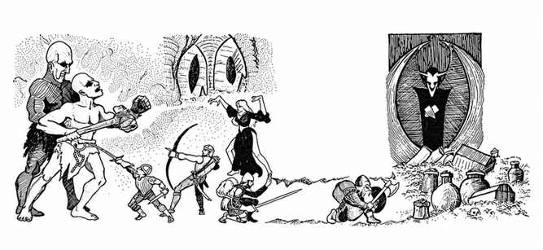

聚落与定居点 · Inhabitation
检查每一格是否有人居住，掷 01–00：
| 骰值 | 定居点类型 | 人口 |
|---|---|---|
| 01–03 | 独户住宅 | 1–12 |
| 04–05 | 小聚落 | 20–80 |
| 06–07 | 村庄 | 100–400 |
| 08–09 | 村落 | 600–900 |
| 10 | 城镇 | 1,500–6,500 |
| 11 | 城市 | 10,000–60,000 |
| 12–14 | 城堡* | — |
| 15–16 | 遗迹；重新掷骰决定类型 | — |
| 17–00 | 无人居住 | — |
遗迹类型：村庄 01–30；城市 31–60；神殿 61–85；墓穴 86–00。
\* 城堡见附录 C“城堡表”，第 182–183 页。

上一节：地形指南 · Terrain Guide
下一节：附录 C：随机怪物遭遇 · Appendix C: Random Monster Encounters